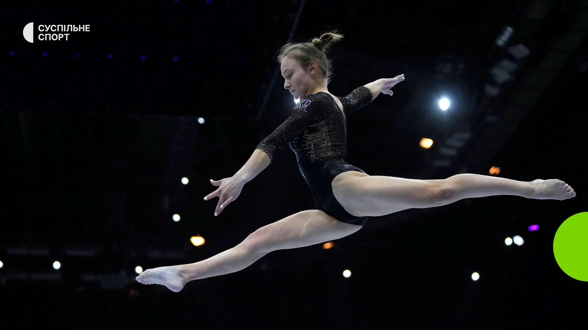
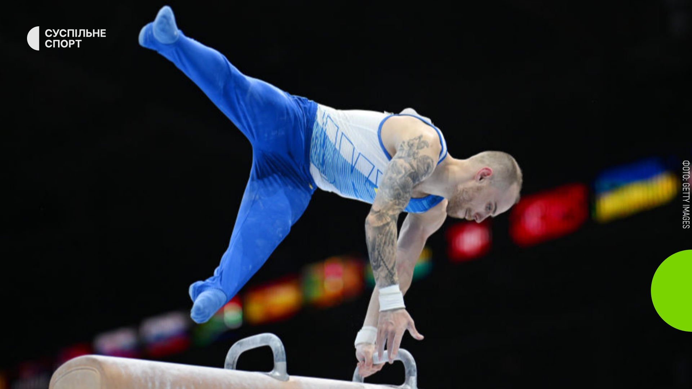
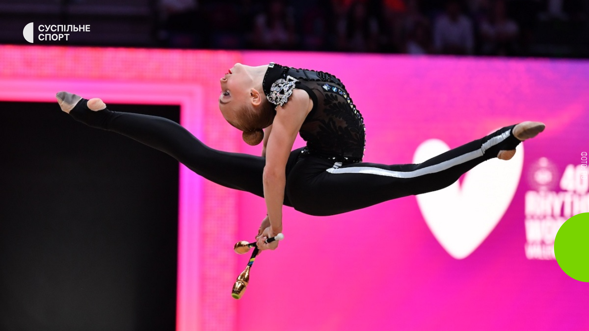
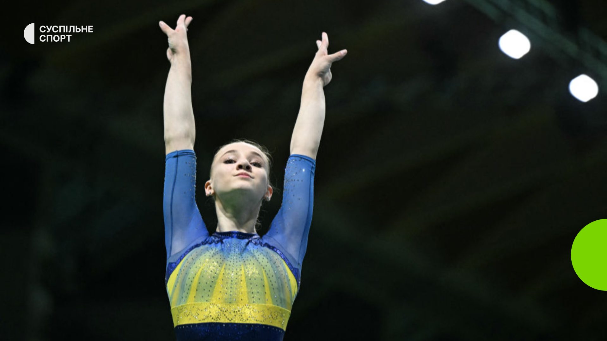
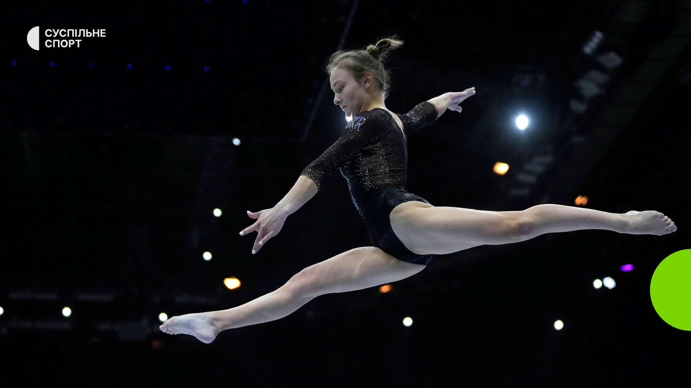
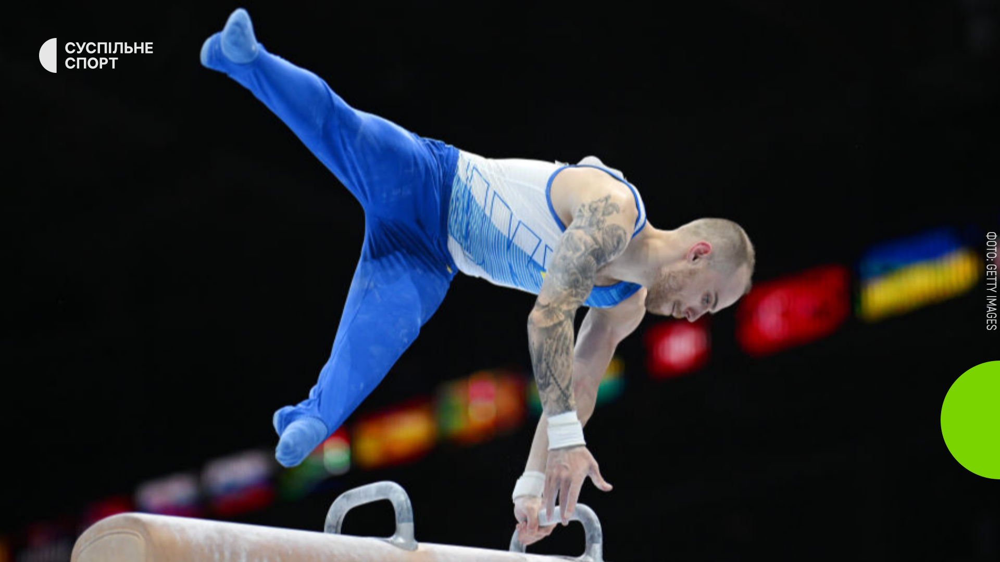
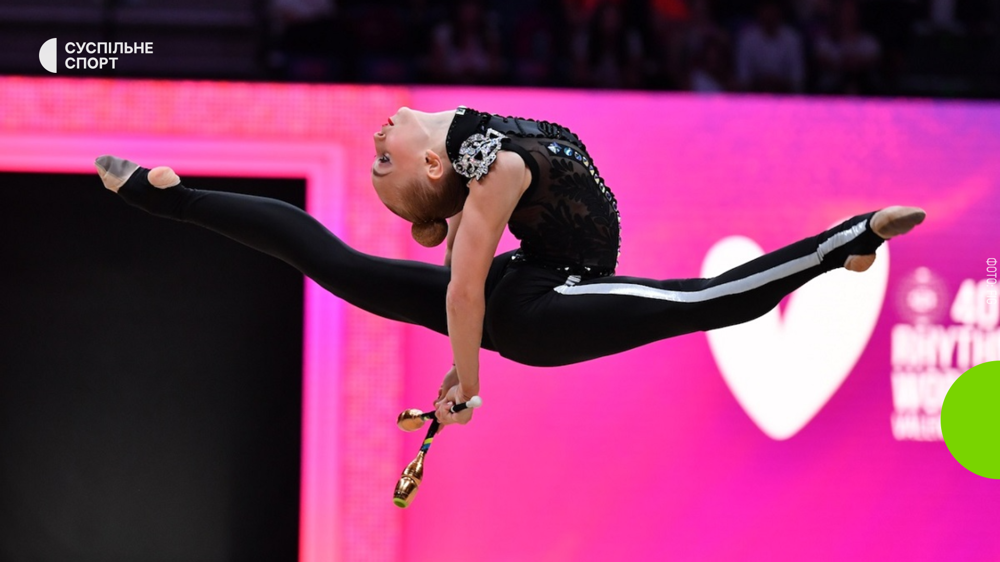
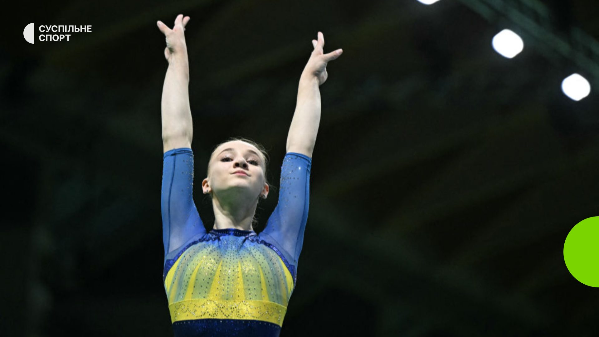

⬆
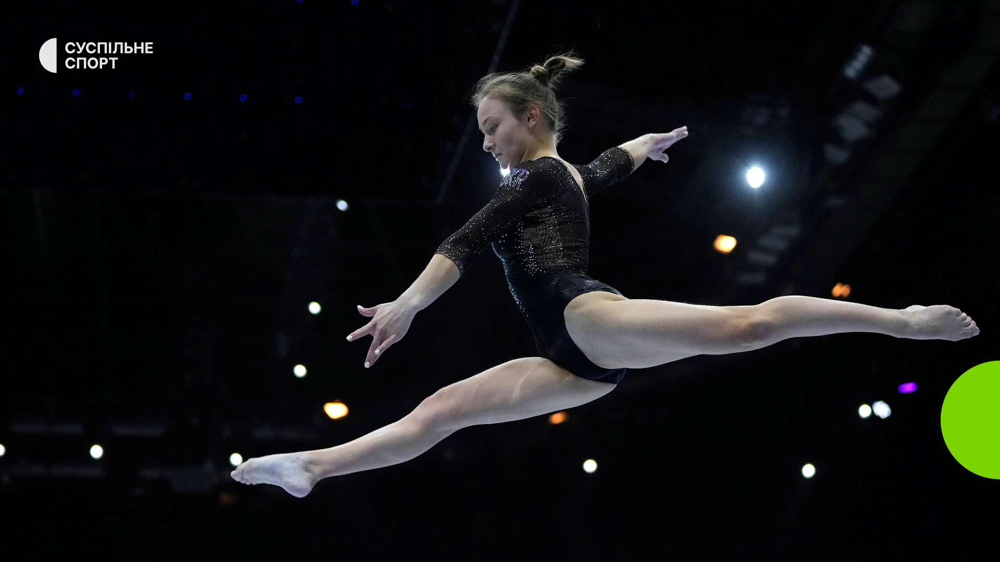
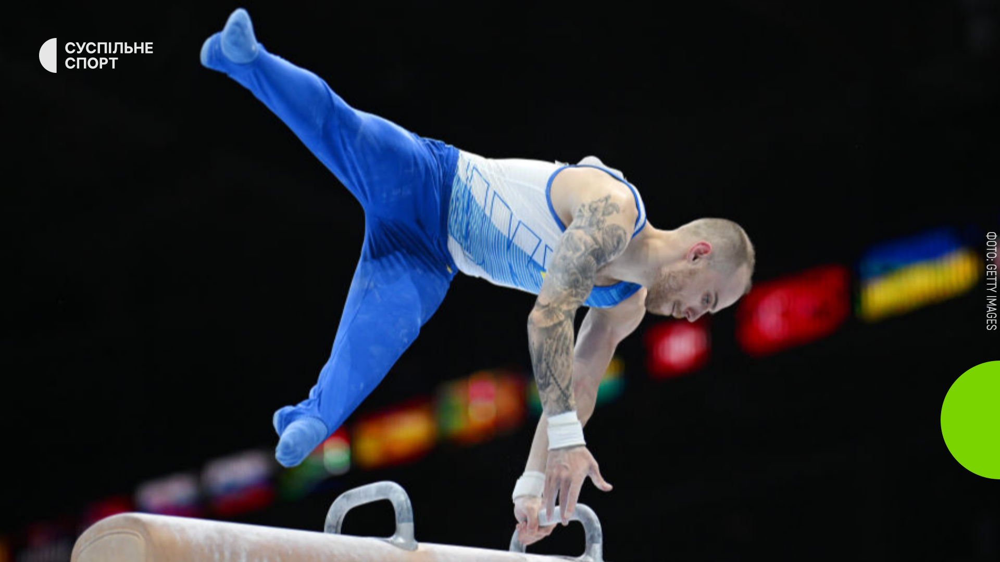
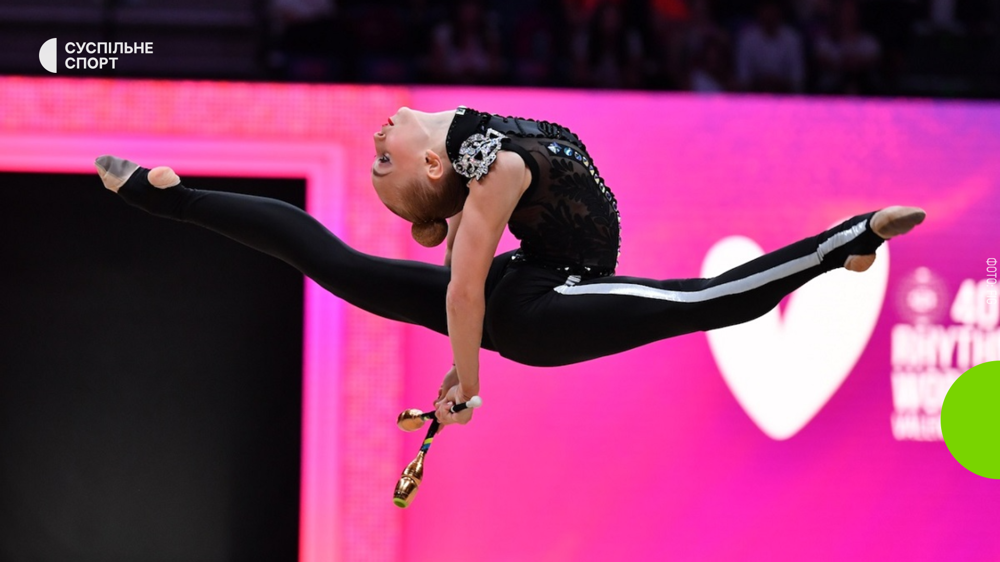
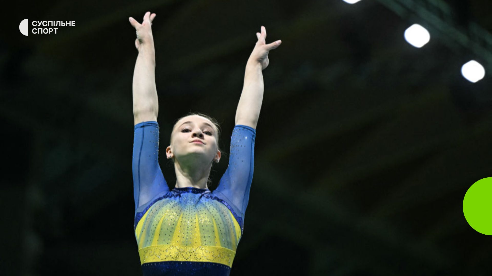
Спортивна гімнастика — олімпійський вид спорту представлений як вільними вправами, так і окремими на спортивних приладах, який охоплює вправи на спритність, швидкість, витривалість, гнучкість, виразність рухів; різновид гімнастики. Вільні вправи — це комбінації різноманітних рухів, в поєднанні з ритмічною музикою. Вправи на гімнастичних приладах — канаті, перекладині, брусах, кільцях, колоді, конях для махів і опорних стрибків.
До кінця ХІХ на початку ХХ століття сформувалися основи спортивної гімнастики, а також з'явилися її нові види: художня, ритмічна, акробатика, стрибки на батуті.
Програма сучасної чоловічої спортивної гімнастики для проведення змагань з спортивної гімнастики за олімпійськими правилами складається із вправ на шести приладах: вільних вправ, вправ на перекладині, паралельних брусах, кільцях, гімнастичному коні та опорного стрибка.
На великих турнірах окрім змагань на окремих приладах розігрується також абсолютна першість — за сумою оцінок на всіх приладах, та командна першість — змагання між збірними країн.
Справами спортивної гімнастики опікується Міжнародна федерація гімнастики (латинське скорочення FIG — Federation Internationale de Gymnastique).